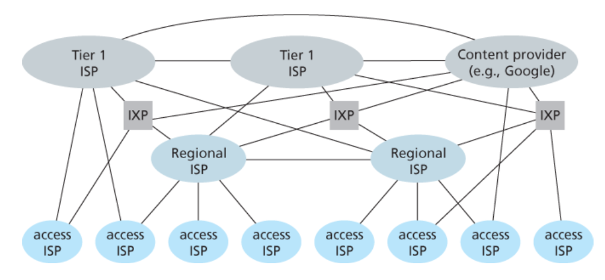
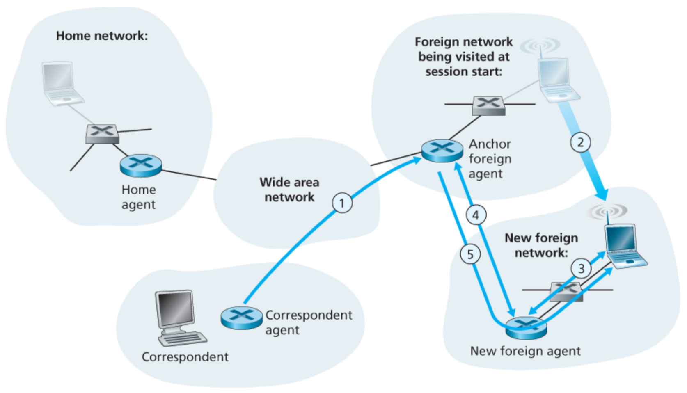

Computer Networking
- Computer Networking
1. Networks
The Internet
The Internet is a Network of Networkss 
It uses Packet Switching, rather than Circuit Switching
An Access Network is the network that physically connects an end system to the first router
A Host / end system is a device on the edge of the network
An Autonomous System (AS) is a group of networks that are connected to each other under a centralized administration.
- Models
- 5 Layer Model
- OSI Model : Expands app layer into 3 layers
Performance Measurements
Latency (time between action and reaction) is estimated through RTT (Round Trip Time)
Packets may face Delay (Processing, Queuing, Transmission, Propagation ) or even Loss ( mostly from full queues )
Throughput is the rate at which packets are transmitted over a link
Protocols
A protocol defines:
- Request and Response messages
- Message structure (syntaxis)
- Message fields (size, function, delimiters)
- Procedure (sending and receiving)
2. Application Layer
Network applications are the raisons d’être of a computer network
Applications
A network application consists of pairs of processes that send messages to each other over a network,
it may have a Client-Server Architecture or a P2P Architecture.
the process that initiates the communication is labeled as the client
Process communication
The socket api is used to communicate.
a process is identified by:
- the address of the host (ip address)
- process identifier in the destination host (port)
The lower layers could provide various guarantees, such as: reliable delivery, throughput, timing and security .
Protocols / Applications
- HTTP
- Electronic Mail
- DNS (Domain Name System)
- P2P FTP
- Video Streaming w/ CDN
3. Transport Layer
Communication between processes
Services
- Must provide
- Muxing / Demuxing (of processes)
- Error Verification (minimal, checksum)
- Could provide
- Reliability ( arrives . unchanged . in order )
- Flow control ( throttle , with an eye on the data flow )
- Congestion control ( throttle , with an eye on the network, share the channel equitably )
- Security / Safety (Privacy / Authentication / Data Integrity / etc)
- Could provide, depending on lower layers
- Time guarantees
- Throughput guarantees
Flows
A flow is composed of:
- src ip
- src port
- dest ip
- dest port
Types of flow (rdt):
- Stop & Wait
- Pipeline
- Go Back N
- Selective Repeat
Protocols
-
TCP : Provides rdt & flow/congestion control on top of basic services.
-
UDP : Provides the minimal services.
4. Network Layer - Data Plane
Communication between hosts
Internet Protocol
Best effort delivery of packets
- IPV4:
- Source and Destination IP addresses
- Total Length (Data + Header)
- Protocol
- Checksum
- Version IP ( 4 / 6 )
- Priority
- TTL : Time To Live ( Remaining Hops )
- Options
- Fragment Offset
- Packet Id
- IPV6:
- Bigger direction space
✓(32b -> 128b) - Modular Header
✗ - No Fragmentation in network ( has to be done at ends )
✓ - Auto configuration
~ - Differential Flow Treatment ( For QoS )
✗ - No checksum ( few errors , relies on lower layers )
~
- Bigger direction space
IPV4 Header:
0 1 2 3
0 1 2 3 4 5 6 7 8 9 0 1 2 3 4 5 6 7 8 9 0 1 2 3 4 5 6 7 8 9 0 1
+-+-+-+-+-+-+-+-+-+-+-+-+-+-+-+-+-+-+-+-+-+-+-+-+-+-+-+-+-+-+-+-+
|Version| IHL |Type of Service| Total Length |
+-+-+-+-+-+-+-+-+-+-+-+-+-+-+-+-+-+-+-+-+-+-+-+-+-+-+-+-+-+-+-+-+
| Identification |Flags| Fragment Offset |
+-+-+-+-+-+-+-+-+-+-+-+-+-+-+-+-+-+-+-+-+-+-+-+-+-+-+-+-+-+-+-+-+
| Time to Live | Protocol | Header Checksum |
+-+-+-+-+-+-+-+-+-+-+-+-+-+-+-+-+-+-+-+-+-+-+-+-+-+-+-+-+-+-+-+-+
| Source Address |
+-+-+-+-+-+-+-+-+-+-+-+-+-+-+-+-+-+-+-+-+-+-+-+-+-+-+-+-+-+-+-+-+
| Destination Address |
+-+-+-+-+-+-+-+-+-+-+-+-+-+-+-+-+-+-+-+-+-+-+-+-+-+-+-+-+-+-+-+-+
| Options | Padding |
+-+-+-+-+-+-+-+-+-+-+-+-+-+-+-+-+-+-+-+-+-+-+-+-+-+-+-+-+-+-+-+-+
Forwarding
Forwarding : transferring a packet from an input to the appropriate output. Very fast (ns), implemented in hardware.

HOL ( Head Of Line Lock ) -> When an package blocks an input queue because the corresponding output is occupied.
- Types of Switching
- Memory Based
- Bus Based
- Crossbar Based
- Types of Forwarding
- Destination Based
- Generalized (OpenFlow)
Can match multiple fields (mac, ip, port, protocol, etc) and perform actions (forward, drop, modify, etc)
A full queue is problematic, thus packets are dropped before it happens -> RED - Random Early Detection
Middle-Boxes
Some of these can be implemented using Generalized Forwarding
- Firewall
- Load Balancer
- NAT (Network Address Translation)
5. Network Layer - Control Plane
The network-wide logic that controls communication between hosts and network configuration/management
Routing
Routing : the network-wide process that determines the end-to-end paths that packets take from source to destination. Slow (s), implemented in software.
-
Classification
- distributed / centralized (sdn)
- static / dynamic
- traffic dependent / independent
- Routing Algorithms
Link State Routing (LS)
Centralized, the network topology and all link costs are known (link-state broadcast algorithm); each node performs shortest path computation to all others (Dijkstra)Distance Vector Routing (DV)
Decentralized, each node begins with only the knowledge of the costs of its own directly attached links; the calculation of the least-cost path is carried out in an iterative, distributed manner by the routers. Each node maintains a vector of estimates of the costs (distances) to all other nodes in the network, nodes share their vectors, use Bellman-Ford and converge to the shortest path (more or less).- Intra-AS Routing Protocols
- Security (authentication)
- Multiple same-cost paths
- Hierarchy within a single AS (configured as bordering areas)
- Multicast OSPF (MOSPF) provides simple extensions to OSPF to provide for multicast routing
Routing Information Protocol (RIP)
DV Protocol. Prevents loops by implementing max hopsOpen Shortest Path First (OSPF)
LS Protocol. Nodes broadcast to all other nodes, not just neighbors; periodically, even if the state is unchanged, which adds robustness. It supports some additional features:- Inter-AS Routing Protocol
-
Only one to operate between AS, can also be used internally
-
Neither link-state nor list-vector, but uses methods from both
-
Functioning
- grabs its routing table and sends it to its neighbors ( similar to rip )
- avoids loops by using
AS_path& discarding entries where the self AS is included - no flooding, signals updates on significant changes / depending on policies
-
Can save multiple entries for a single destination
- marks one entry as the one in use
- saves more alternatives in the case its next hop disconnects to not wait for the protocol to re-run until it converges
-
Can have LP ( Local Preferences ) like weights/etc, useful for local use
-
traffic engineering
- as_path prepend: adds the self ass_path many times to make the entry larger and reduce its priority (backup)
-
Anycast: announces a single ip of a whole prefix (mask), multiple hosts have that ip
-
Policies
- transit: only announce routes of clients
- peer to peer is only announced downwards, not upwards (to providers)
-
manrs : Mutually Agreed Norms for Routing Security -> see ppt
Border Gateway Protocol (BGP)
Separating routing in Intra/Inter AS is key due to Scale and Administrative Autonomy
Trying to centralize all routers would be imposible.
RIP & OSPF work automatically. BGP needs some configuration ( specially for providers, consumers not so much )
SDN
The first routers ran their routing protocol ( generating routing table )
- Flow-based forwarding
- Separation of data plane and control plane
- Network control functions: external to data-plane switches
- A programmable network
Other Protocols
- ICMP (Internet Control Message Protocol)
- SNMP (Simple Network Management Protocol)
- DHCP (Dynamic Host Configuration Protocol)
- DHCPDISCOVER , DHCPOFFER , DHCPREQUEST , DHCPACK
6. Link Layer
how packets are sent across the individual links that make up the end-to-end communication path
Services
- Framing
- Link Access (MAC)
- Reliable Transfer
- slow and hardly implemented as transfer media is pretty reliable nowadays
- most wireless devices do something to this end
- Error detection and correction
As a rule of thumb, the number of bits that can be corrected is half of what can be detected
- Parity Verification
- uni/bi dimensional
- Not really used, not good enough
- CRC ( Cyclic Redundancy Check )
- Link Layer err handling is CRC or better
- Adds very little overhead and increases reliability a lot (eg. wireless: +1% err , x10e-5 BER)
- Parity Verification
Multiple Access
- Channels can be point-to-point (PPP) or multiple access
- Broadcasting Media ( Diffusion )
- Security Issues, everything is listened by everyone
Channel Partitioning
Deterministic but limits transmission rates
- TDM : Time Division Multiplexing
- FDM : Frequency Division Multiplexing
- CDM : Code Division Multiplexing
Random Access
- ALOHA / Slotted ALOHA
- CSMA (Carrier Sense Multiple Access)
- CS: Don't speak if someone else is speaking
- CSMA/CD (Collision Detection)
- Detects collisions
- Cabled MA, where everyone hears everything
- CSMA/CA (Collision Avoidance)
- Wireless MA, hosts may not hear another (hidden agent)
- Access point acknowledges messages (ack slot)
- Request to Send (RTS) / Clear to Send (CTS)
Taking-Turns
- Centralized
- Token Ring (Decentralized)
- High Utilization ( almost 100% )
- If a host disconnects the ring needs to be rebuilt
- died because it was too expensive
- Max Token Time, Host Number -> Thus Max wait time is known -> Good for Real Time
- Token Bus (Decentralized)
- Builds on Token Ring using Ethernet's cheap technology
- Its troublesome when the token bearer dies
Definitions & Protocols
-
ARP (Address Resolution Protocol)
- IP to MAC
-
Ethernet
-
Wifi
- CSMA/CA
- Active/Passive Discovery
- Adapts to the env SNR, energy saving
-
Token Ring & Token Bus
-
LAN
- Local Area Network (small scale)
- a broadcast reaches all hosts
- many hosts with a shared medium
- VLAN (Virtual LAN)
- Logically separated LAN's
- Separated by Switches
-
MPLS (Multi Protocol Label Switching)
- used for traffic engineering
7. Wireless
Wireless Networks
Wireless LAN's (Wifi) and Mobile Broadband's (3G,4G,etc)
- Physical Media Characteristics
- Potency & Attenuation
- Signal strength is lost over distance
- Also, reflection may cause shifted waves to cancel or attenuate the signal
- Interference
- from other sources
- Multipath propagation
- Dependencia del tipo de modulación y el BER (???)
- Potency & Attenuation
- Measurements
- BER ( Bit Error Rate )
- ErredBits / TotalTransmittedBits
- Wireless BER = 10e-3 -> 10e-5 (now)
- Optic Fiber BER = 10e-9 ( 1 erred bit in 100MB )
- SNR ( Signal to Noise Ratio )
- BER ( Bit Error Rate )
Mobile Networks
ip is not adapted to mobility; cellular tech was,
and extending it was most cost effective than other alternatives ( like wifi-max ) , in particular , handover was a concern that it was designed for.
Agents
- Mobile Agent
- Home Agent
- Foreign Agent
Addressing
-
A mobile-user location protocol is needed
for the FA to query the HA to obtain the MA's COA -
How to handle when the mobile node moves from one foreign network to another ( the HA is queried for the COA only at the beginning of the session)
Indirect

Direct
Transfer

COA : Care of Address, the address of the mobile agent known to the foreign agent
Mobility
- Handoffs / Handover
- Rerouting
Cell Networks Internet Access
Cell towers have a grid-like disposition (hexagons) where there is some overlap between coverage regions,
to avoid interference regions have 6 areas w/ different frequencies between neighboring ones.


8. Security
Network Security
- Confidentiality
- Only the sender and receiver should understand the message
- Solved through encryption
- Message integrity
- Messages should be unaltered
- Solved through hashing
- End-point authentication
- both paries should be able to confirm the identity of the other party
- Solved through signing
- Operational security
Cryptography
Concepts
- plaintext / cyphertext
Encryption
- Symmetric Key Cryptography
- Block Ciphers ( DES , 3DES , AES )
- Asymmetric Key Cryptography
- Public Key Cryptography ( RSA )
Integrity
- Cryptographic Hash Functions
- MD5 , SHA1 , SHA256 , SHA512
- Signatures
- RSA
A message might append a hash, and a signature of the hash to ensure integrity,
Since a signature of the whole message would be too big / resource consuming.
Public Key Certification
- Certificate Authority ( CA )
- We trust a CA to verify the authenticity of a Public Key
Authentication
1. Alice sends the message “I am Alice” to Bob.
2. Bob chooses a nonce, R, and sends it to Alice.
3. Alice encrypts the nonce using Alice and Bob’s symmetric secret key, KA−B,
and sends the encrypted nonce, KA−B(R), back to Bob,
which lets Bob know that the message was generated by Alice.
The nonce is used to ensure that Alice is live.
4. Bob decrypts the received message.
If the decrypted nonce equals the nonce he sent Alice,
then Alice is authenticated.
The symmetric key is shared using a secure channel first
Commonly relying on assymmetric encryption
Protocols
- PGP ( Pretty Good Privacy )
- e-mail encryption scheme
- Secure Sockets Layer (SSL)
- Transport Layer Security (TLS) [modified ssl]

Web Request
- HTTP (app)
We want to make an http request to a certain domain.
We need its IP ( port 80 by convention ) - DNS (app)
We want to make a request to the local dns server.
eg. 8.8.8.8 - UDP (transport)
The dns request is wrapped in a udp packet
- IP (network)
The udp packet is wrapped in a ip packet
- ROUTING (network)
The destination is routed,
it needs to be sent to the default gateway,
we need its mac address - ARP (link)
- dst_mac : Broadcast
- dst_ip : NextHop (gateway)